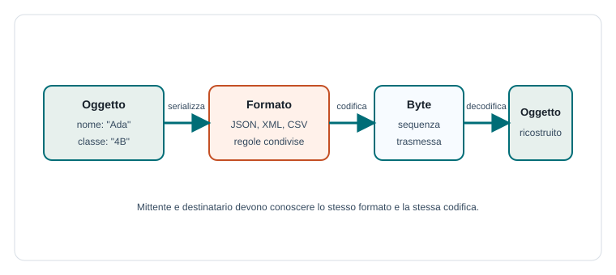

Capitoletto 3
Scambio e rappresentazione dei dati
La rete trasporta sequenze di byte, ma le applicazioni lavorano con numeri, stringhe, oggetti, liste e record. Per comunicare correttamente bisogna trasformare i dati in un formato condiviso e poi ricostruirli dall'altra parte.
Obiettivi della lezione
- Capire perché in rete i dati viaggiano come byte.
- Distinguere dato applicativo, formato e codifica.
- Definire serializzazione e deserializzazione.
- Confrontare formati testuali e binari.
- Riconoscere il ruolo della validazione dei messaggi.
Dai dati ai byte
Un'applicazione può gestire dati complessi: un utente, un voto, un messaggio, una prenotazione, una lista di prodotti. La rete però non conosce questi concetti: trasporta byte. Serve quindi una rappresentazione che trasformi i dati dell'applicazione in una sequenza trasmissibile.
Il mittente deve codificare i dati e il destinatario deve interpretarli nello stesso modo. Se le due parti non condividono formato e codifica, il messaggio può essere frainteso anche se arriva senza errori.

Codifica dei caratteri
Quando si invia testo, bisogna stabilire come rappresentare i caratteri. Una codifica assegna numeri ai simboli. Oggi la codifica più comune è UTF-8, perché può rappresentare caratteri di molte lingue ed è compatibile con molti sistemi.
| Concetto | Significato | Esempio |
|---|---|---|
| Carattere | Simbolo logico. | A, è, 9 |
| Codifica | Regola che trasforma caratteri in byte. | UTF-8 |
| Formato | Struttura del messaggio. | JSON, XML, CSV |
Serializzazione
La serializzazione trasforma una struttura dati in una sequenza di byte o testo. La deserializzazione fa il percorso inverso: legge la sequenza ricevuta e ricostruisce la struttura dati.
Dati applicativi:
nome = "Ada"
classe = "4B"
presente = true
Rappresentazione JSON:
{"nome":"Ada","classe":"4B","presente":true}La serializzazione deve conservare il significato dei dati. Per esempio, il valore 10 può essere un numero, una stringa, un codice o una quantità: il formato deve permettere al destinatario di capirlo correttamente.
Formati testuali e binari
I formati testuali sono leggibili dagli esseri umani e facili da ispezionare durante il debug. I formati binari sono spesso più compatti e veloci, ma meno immediati da leggere senza strumenti specifici.
| Formato | Tipo | Uso tipico | Caratteristica |
|---|---|---|---|
| JSON | Testuale | API web, configurazioni, scambio dati. | Compatto e molto diffuso. |
| XML | Testuale | Documenti strutturati, integrazioni legacy. | Verboso ma molto descrittivo. |
| CSV | Testuale | Tabelle semplici. | Adatto a righe e colonne. |
| Binario | Binario | Audio, video, immagini, protocolli efficienti. | Compatto, richiede specifica precisa. |
Delimitare i messaggi
In una comunicazione TCP i dati arrivano come flusso di byte. Il programma deve capire dove finisce un messaggio e dove inizia il successivo. Questo problema si chiama delimitazione o framing.
| Metodo | Idea | Esempio |
|---|---|---|
| Separatore | Un simbolo indica la fine del messaggio. | Una riga termina con \n. |
| Lunghezza | Prima si invia la dimensione del messaggio. | 32:{...messaggio...} |
| Formato strutturato | La struttura indica inizio e fine. | Oggetto JSON completo. |
Validazione dei dati ricevuti
Ogni messaggio ricevuto dalla rete deve essere considerato non affidabile finché non viene controllato. Può essere incompleto, malformato, troppo grande, fuori formato o creato apposta per provocare errori.
- Controllare che il formato sia corretto.
- Controllare che i campi obbligatori esistano.
- Verificare tipi, lunghezze e valori ammessi.
- Gestire dati mancanti senza bloccare il programma.
- Non eseguire mai comandi ricevuti dalla rete senza controlli.
Esempio guidato: invio di un voto
Un client invia al server un voto inserito dal docente. Il dato applicativo contiene studente, materia, voto e data. Prima di inviarlo, il client lo serializza in JSON; il server lo riceve, lo valida e lo salva.
{
"studente": "Mario Rossi",
"materia": "TPSIT",
"voto": 8,
"data": "2026-03-12"
}Il server deve controllare che il voto sia numerico, che sia compreso nell'intervallo ammesso, che la materia esista e che l'utente abbia il permesso di inserire voti.
Esercizi guidati
- Scrivi in JSON un messaggio che rappresenta la prenotazione di un laboratorio.
- Spiega perché mittente e destinatario devono usare la stessa codifica.
- Confronta JSON e CSV usando un esempio scolastico.
- Indica tre controlli da fare su un messaggio ricevuto dalla rete.
Domande con risposta semplice
Che cosa significa serializzare?
Significa trasformare una struttura dati in una sequenza trasmissibile, per esempio testo JSON o byte.
Perché il formato del messaggio è importante?
Perché permette al destinatario di capire il significato dei byte ricevuti e ricostruire correttamente i dati.
Perché bisogna validare i dati ricevuti?
Perché la rete può portare dati errati o ostili. La validazione evita errori, incoerenze e problemi di sicurezza.
Per ripassare
La rete trasporta byte. L'applicazione deve scegliere formato, codifica, regole di delimitazione e controlli di validazione per trasformare quei byte in dati affidabili.